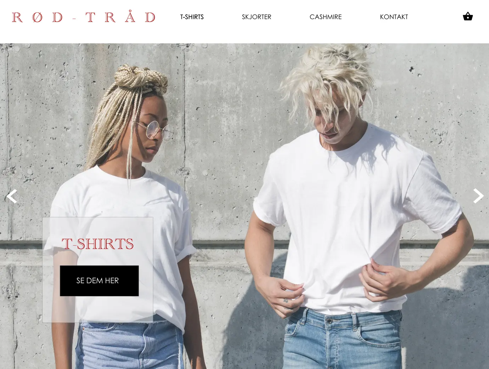
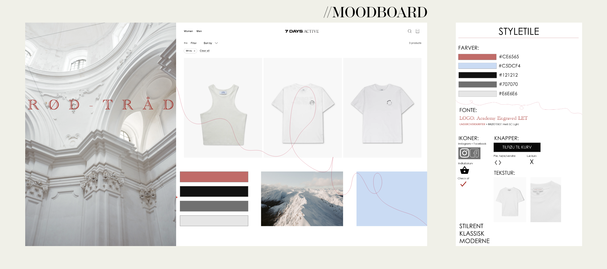

Grundlæggende / UX
På UX temaet fik vi en grundlæggende forståelse for UX (brugeroplevelse) og dets rolle i udviklingen af digitale brugergrænseflader. Vi lærte om teorier, værktøjer og metoder til at udføre research, til design og test i digital produktudvikling. Temaet fokuserede også på en række principper inden for organisering, produktion og præsentation af indhold, samt en række relevante teknologier og jura inden for multimediedesign.
Den overordnede case på temaet var opgaven 03.04.01 Pitch, som omhandlede salg af t-shirts på en webshop.
Koncept
Opgavebeskrivelsen på grundlæggende UX lød på at vi skulle lave en prototype til en webshop, som sælger T-shirts. Til at starte med skulle vi vælge et koncept for vores webshop. Jeg valgte at mit koncept skulle hedde Rød Tråd. Visionen var at det skulle være en webshop, som tilbød klassiske basic styles af god kvalitet, som man ville kunne mikse og matche på kryds og tværs, og bruge sæson efter sæson. Råd Tråd skulle være en virksomhed, der ville gøre op med fast fashion, og i stedet hylde det tidløse og minimalistiske, ved at sælge t-shirts, og en række andre key items i klassiske silhouetter til basis garderoben.
-
Afsender:
En lille dansk virksomhed, hvis fokus er at sælge kvalitet frem for kvantitet. -
Målgruppe:
Til at starte med var min målgruppe kvinder i alderen 20-40 år, som går op i klassisk minimalisme, og som ikke vil gå på kompromis med kvalitet og komfort. Efter min research ændrede denne sig til at være både mænd og kvinder i alderen 20-30 år. -
Produkter:
På webshoppen skulle sælges tre forskellige produkter, i størrelse xs-xl:- T-shirts, Box Fit: Hvid og navy, 100% Økologisk Bomuld
- Skjorter, Classic fit: Hvid og stribet, 100% Økologisk Bomuld
- Cashmere Pullovers: Sort og grå, 100% Cashmere
-
USP:
Rød Tråds USP er Buy less, buy better. Udover det var der 10% i studierabat og fri fragt på køb over 1000 kr., som en kundefordel (denne baseret på aldersgruppen).
Research
For at finde ud af hvad min målgruppe foretrækker, inden for t-shirts og t-shirt shopping, benyttede jeg mig af en række forskellige research-metoder.
Deskresearch
Jeg valgte at jeg gerne ville undersøge produktionen af t-shirt produktion nærmere. Her benyttede jeg mig af en række internet kilder, som hver især gav mig nogle insigter om t-shirt produktion. Først og fremmest fandt jeg ud af at tøjproduktion er en kæmpe klimabelastning, hvilket førte til min webshops USP, buy less buy better. Hvis man alligevel skal ud og købe nyt, kan man ligeså godt købe produkter af høj kvalitet, så man mindsker overforbruget af tøj. Derudover fandt jeg ud af at der er en kæmpe forskel på økologisk- og konveltionel bomuld, både i forhold til hvordan det er dyrket, produceret og føles på kroppen. Det valgte jeg at imødekomme ved at mine produkter alle sammen skulle være lavet i økologisk bomuld, af høj kvalitet.
Observation
Observationsteknikken består af at man overvære nogen der foretager en handling; det kan f.eks. Ske i et fysisk rum eller være en handling nogen foretager sig. Observation kan bruges til at undersøge en kundes/brugers adfærd.
Jeg valgte at observere en person der skulle internetshoppe. Her var det min veninde, der skulle købe en t-shirt på Bareen.dk.
Fra min observation fik jeg en række indsigter:
- Store billeder og produkt-sneakpeaks skaber blikfang, og er med til at eksponere kunden for et større produktudvalg.
- Det er vigtigt at en webshop følger konventionerne, da det skaber et bedre brugerflow.
- Kvinder shopper også under herre kategorier, hvorfor unisex fit kunne være en mulighed.
Jeg valgte at benytte mig af observationsemne C, Online T-shirt Shopping, da jeg synes det gav mest mening i forhold til at min research gerne skulle hjælpe mig med at udvikle en brugervenlig webshop. Ud fra min observation fik jeg en idé om hvordan en eventuel kundes adfærd er på en webshop, og hvordan dennes behov bliver opfyldt på den bedst mulige måde; derudover var det her min målgruppe skiftede til at omfatte både mænd og kvinder.
Interview
Et interview kan hjælpe en med at få en bedre- og mere uddybende forståelse for en eller flere personers holdning til-, eller erfaring med et givent emne.
Jeg valgte at interviewe min veninde, som er 25 år gammel og studerende. Jeg ville gerne danne mig et bredere indtryk af t-shirt shopping på internettet generelt, om bæredygtighed og materiale var vigtigt, men også få et indblik i forhold til vigtigheden af brugervenligheden på en webshop.
Min interview guide bestod af emner som i grove træk omhandlede:
- T-shirts generelt: Fit og kvalitet
- Bæredygtighed: Er det overhoved vigtigt?
- Basic items
- Brugervenlighed på webshops
Efter mit interview fik jeg en række indsigter:
- Færre produkter, gør en webshop mere overskuelig; et kæmpe sortiment er ikke nødvendigvis et plus, og kan virke uoverskueligt at skulle navigere rundt i.
- En webshop skal være let at aflæse; man skal nemt kunne afkode hvilket site men er inde på.
- Der skal ikke være for mange pop up vinduer, det er et irritationselement.
Mange af de ting jeg havde fundet ud af ved mine tidligere research metoder gik igen og blev bekræftet yderligere i interviewet, men jeg fik nogle flere inputs til hvordan jeg skulle designe min webshop så den blev så brugervenlig som muligt, bl.a. er det et plus at produktudvalget ikke er for stort, men derimod koncentrere sig om færre produkter, for et bedre overblik.
Survey
Et survey er et godt redskab at benytte i den indledende research fase, til at undersøge en målgruppe og deres holdninger til et givent emne. Et survey er godt i forhold til at anskaffe sig kvalitativ og kvantitativ data; surveyet er oftest et spørgeskema, som besvares af en række mennesker, hvorefter man kan udtrække de indsendte svar. Efterfølgende går man ind og analysere disse og danne sig et overblik over eventuelle mønstre og tendenser.
Fra mit survey fik jeg en række indsigter:
- En eventuel køber af t-shirts fokuserer på god kvalitet, men til en overkommelig pris.
- De fleste af mine respondenter var i alderen 20-30 år, hvorfor man må gå ud fra at en del af disse er studerende, og på su; derfor valgte jeg at der skulle være studierabat på min webshop.
- Folk shopper t-shirts fra hver 3. måned til 1 gang om året.
Mit survey var ikke den research teknik jeg fik flest indsigter ud af; én af grundene kan være, at jeg kun delte det på min egen facebook profil, hvorfor de fleste af respondenterne er i min egen omgangskreds, og i min egen aldersgruppe. Til en anden gang vil jeg sende mit survey ud til flere aldersgrupper og ikke kun til mit eget netværk, for at få nogle mere variede svar. Derudover kunne jeg godt have lavet mine spørgsmål mere centrerede om ét emne inden for t-shirt handel, for at få nogle mere brugbare og specifikke svar.
Prototyper
Skitsering
Efter researchfasen begyndte vi at skitsere idéer ned på papir, og skrive noter til vores endelige prototype. Vi gjorde brug af "The Four Step-Sketch".
Første step var "Notes"; her tog jeg en masse noter til layout, design og features fra eksisterende webshops og deres bruger flows. Nogle af de ting jeg observerede var hvordan en købsproces er stillet op, hvordan en produktside ser ud i forhold til at vælge størrelse, farve og tilføje til kurv, og til sidst hvordan en menu er sat op på den mest optimale måde, for en brugervenlig navigation.
Næste step er "Ideas", hvor jeg begyndte at skrive mine overordnede idéer ned; Her lavede jeg også min første papir prototype, med dertilhørende noter.
Det tredje step er "Crazy 8's", som fokuserer på et design sprint, hvor man skal skitsere otte forskellige idéer på 8 minutter, hvorefter man har en bred vifte af løsninger. Efter de 8 minutter havde jeg en række idéer til opsætning af produkter i forhold til hinanden, en produktside, det generelle layout for siden og eventuel opsætning af produktinfo og billeder.
Sidste step er en "Solution Sketch". Jeg sammenkoblede mine idéer fra "Crazy 8's" og lavede en endelig papirprototype, med et sammenhængende layout.
Decide-fasen
Vi lavede et "Art Museum" på holdet, hvor vi hver især skulle hænge vores solution sketches op, og vise dem frem for hinanden. Vi startede med at lave et "Heat Map", hvor vi gik rundt og kiggede på hinandens løsninger, som var anonyme, hvorefter vi skulle sætte prikker på de features vi bedst kunne lide. Til sidst var der "Speed Critique", hvor Brian og Anders, opsummerede de skitser der havde fået flest stemmer. Efter decide fasen lavede jeg min endelige layout prototype for min webshop, og derefter lavede jeg et moodboard og et styletile.
XD-Prototype
Min research fase og de indsigter jeg fik fra denne, samt min skitserings proces, endte ud i min endelige prototype, som jeg lavede i Adobe XD. Til sidst i forløbet skulle jeg lave tænke-højt-test på mine medstuderende, hvor de kunne komme med diverse inputs, ris/ros til min prototype. Jeg startede med at stille nogle context questions, hvorefter jeg introducerede min prototype, for til sidst at give dem der testede prototypen nogle tasks/opgaver, for at finde ud af hvordan brugerflowet fungerede. Jeg fik god feedback i forhold til opsætningen og layoutet, som folk godt kunne lide, og fik også nogle inputs i forhold til ting der kunne ændres; bl.a. kunne der godt være en "tilføj til favoritter" knap, en mobilepay betalings funktion og nogle af tingene stod lidt for tæt på hinanden og manglede afstand, eksempelvis på produktsiden.
Pitch
Dernæst skulle vi pitche vores proces og vores prototype for lærerne og nogle af vores medstuderende. Vi skulle forberede et UX Pitch-Deck, og præsentationen skulle vare 5 minutter; Det var her vi skulle præsenterer vores indsigter og konklusioner fra vores research og vores tests, samt vise en gennemgang af vores prototype.
Jeg reflekterede til sidst over feedbacken på mit pitch, og fandt en række ting jeg vil tage med mig, til fremtidige projekter:
- Fremhæv de vigtigste indsigter og pointer, og fortæl om dem der er brugt.
- Fremvisning af tidlige skitser, og forklaring om vejen hen til endelig prototype.
- Vigtigt at fremhæve hvordan brugertests er foretaget og på hvem, det samme med survey.
- Fokuser på optimering til sidst; hvorfor og hvordan?